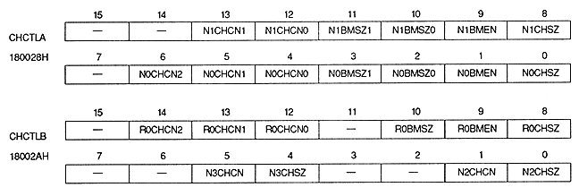

Character color number bit : Character color number bit
N0CHCN2 to N0CHCN0 | 180028H | bits 6-4 | for NBG0 (or RBG1) |
N1CHCN1, N1CHCN0 | 180028H | bits 13, 12 | NBG1 (or EXBG) |
N2CHCN | 18002AH | bit 1 | NBG2 |
N3CHCN | 18002AH | bit 5 | NBG3 |
R0CHCN2 to R0CHCN0 | 18002AH | bits 14 to 12 | for RBG0 |
N0CHCN2 | N0CHCN1 | N0CHCN0 | TV screen mode | Color format | ||||||||||||||||||||||||||||||||||
Normal | High Resolution | Dedicated | ||||||||||||||||||||||||||||||||||||
0 | 0 | 0 | 16 colors | 16 colors | pallet format | |||||||||||||||||||||||||||||||||
0 | 0 | 1 | 256 colors | 256 colors | pallet format | |||||||||||||||||||||||||||||||||
0 | 1 | 0 | 2048 colors | 2048 colors | pallet format | |||||||||||||||||||||||||||||||||
0 | 1 | 1 | 32768 colors | 32768 colors | RGB format | |||||||||||||||||||||||||||||||||
1 | 0 | 0 | Setting prohibited | Setting prohibited | RGB format | |||||||||||||||||||||||||||||||||
1 | 0 | 1 | ||||||||||||||||||||||||||||||||||||
1 | 1 | 0 | ||||||||||||||||||||||||||||||||||||
1 | 1 | 1 |